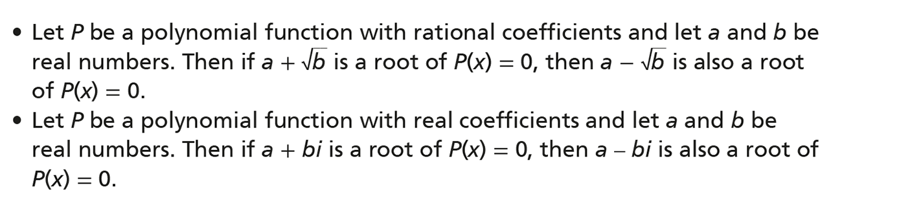

The Conjugate Root Theorem states that if a polynomial function has a root of a + sqrt(b), then another root is a - sqrt(b).
It also says that if a root is a + bi, then a - bi is a root.
If 3i is the root of a polynomial function, then -3i is another root.
If 7 - sqrt(2) is a root of a polynomial, then 7 + sqrt(2) is another root.
When given a root that is in the for a +- sqrt(b) or a +- bi, you can find the other root, set those roots as factors, and multiply them to get your original function.
Because it's a quadratic equation, it has 2 roots. 2 + 5i is a root, so 2 - 5i is the other root.
That means x = 2 + 5i and x = 2 - 5i.
Now you must move the root to the other side to make it a factor:
x - 2 - 5i = 0 and x - 2 + 5i = 0
Now that you have your factors, you can multiply them together to get your original equation:
(x - 2 - 5i)(x - 2 + 5i)
x2 - 2x + 5ix - 2x + 4 - 10i - 5ix + 10i -25i2
x2 - 4x + 4 + 25
x2 - 4x + 29
Your original polynomial would be x2 - 4x + 29